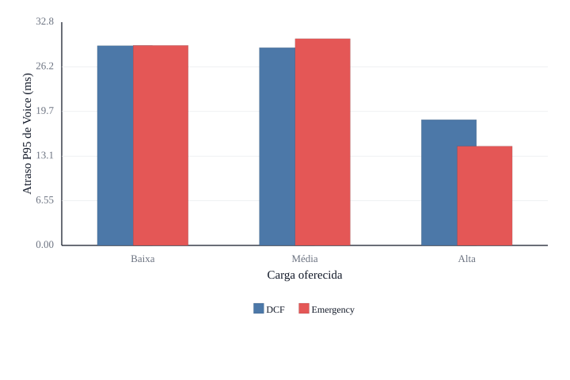
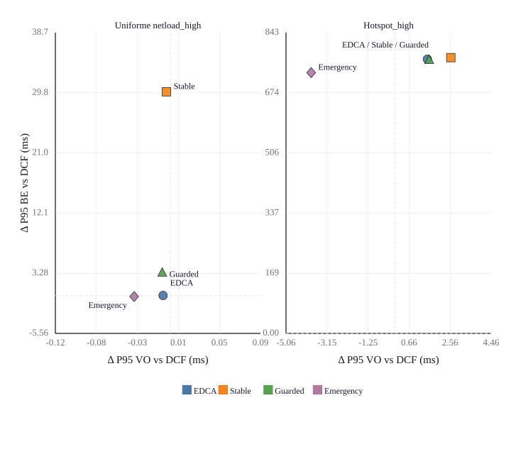
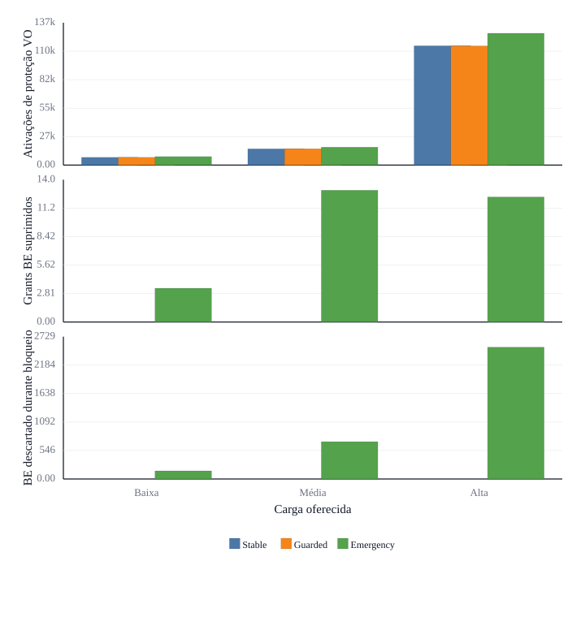

tráfego de rotina de todos os veículos (Best Effort)
Os veículos de trás muitas vezes não enxergam o perigo, encoberto pelo trânsito ou pela geometria da via. Um aviso V2X enviado pelo veículo acidentado pode chegar antes de o perigo ficar visível.
O alerta é raro, mas só tem valor se chegar a tempo, e ele é enviado justamente quando o canal está mais ocupado.
ETSI EN 302 637-3 (DENM): avisos de perigo na via são enviados pelo veículo que detecta o evento.
O que é chegar "a tempo"?3GPP TS 22.186: requisitos de platooning
Grau de automação
Req.
Payload (B)
Taxa (msg/s)
Latência máx.
Confiabilidade
Alcance mín.
Mais baixo
[R.5.2-004]
300–400
30
25 ms
90 %
—
Baixo
[R.5.2-005]
6500
50
20 ms
—
350 m
Mais alto
[R.5.2-006]
50–1200
30
10 ms
99,99 %
80 m
Alto
[R.5.2-007]
—
—
20 ms
—
180 m
25 ms end-to-end é um limite de referência conservador e muito citado, não a linha mais rigorosa.
São metas de aplicação, end-to-end. Dão a ordem de grandeza para ler as tails medidas na MAC; não são um teste de aprovação da MAC.
3GPP TS 22.186, Tabela 5.2-1 (troca de informação dentro do pelotão; 130 km/h). A TS 22.261 remete os KPIs concretos de V2X à TS 22.186.
Tecnologia de acessoPor que IEEE 802.11p?
Os avisos precisam funcionar onde quer que os veículos se encontrem, inclusive em trechos sem unidades de beira de estrada nem cobertura celular.
✕
Cabeado / TSN
Consegue limitar o atraso, mas não conecta veículos em movimento.
✕
Celular via estação-base
Depende de cobertura; toda mensagem passa pela infraestrutura.
~
Sidelink NR-V2X (Modo 2)
Troca direta, mas usa sensoriamento + escalonamento semipersistente: outra tecnologia de rádio.
✓
IEEE 802.11p / 11bd
Troca direta, sem infraestrutura e sem sincronização. 5,9 GHz, 10 MHz; camada de acesso do ITS-G5.
Mas o 802.11p (e o sucessor 802.11bd) mantêm acesso totalmente distribuído, baseado em contenção: não há scheduler central que reserve transmissões para tráfego urgente.
O problemaO alerta espera atrás dos frames de rotina
Vizinhos (BE)
BE
BE
BE
BE
Alerta (VO)
▼ alerta pronto
DIFS
4
congelado
DIFS
3
congelado
DIFS
2
1
TX ALERTA
o atraso de acesso cresce com a carga ao redor
Com mais carga, atraso e jitter ficam instáveis; o backoff do alerta congela toda vez que outra estação transmite.
Marcações de QoS não são tratadas de forma consistente entre implantações.
Cada milissegundo de espera tira tempo de reação dos veículos de trás.
RFC 8325; Wu et al. (congelamento contínuo do backoff no 802.11p).
Ferramentas existentes e a lacunaOs mecanismos padrão existem, mas não bastam
Camada de rede: DSCP 46 (EF)
O codepoint Expedited Forwarding marca o tráfego mais sensível a atraso.
✕ O mapeamento DSCP→802.11 é uma política local, e os padrões são ambíguos.
Camada de enlace: EDCA
Quatro access categories (BK, BE, VI, VO); Voice recebe os parâmetros de contenção mais favoráveis.
✕ Oferece preferência estatística, não garantias, e o tráfego urgente só ganha às custas dos outros.
Abordagens mais fortes na literatura
Schedulers por slots inspirados em TSN, MACs preemptivos/cooperativos, alocação de recursos no sidelink celular…
…mas exigem sincronização, infraestrutura ou mais maquinário de protocolo, difíceis de garantir numa VANET descentralizada.
A lacuna
Um projeto local e orientado a eventos que isole um fluxo disparado pelo acidente do tráfego background e meça tanto a proteção quanto a penalidade.
Só 802.11p padrão, portanto implantável nó a nó.
Este trabalhoUma estratégia focada de priorização ciente de acidente
Todos os veículos
Multicast Best Effort periódico, DSCP 0, durante todo o cenário.
Um veículo acidentado
Rajadas de alerta temporárias, DSCP 46, mapeadas explicitamente para Voice, sobrepostas ao seu próprio BE.
Simulado
Pilha de rede OMNeT++ + INET, acoplada ao tráfego rodoviário do SUMO via Veins.
Cinco políticas MAC, construídas com mecanismos padrão
plain baseline DCFsem diferenciação
edca_only EDCA + DSCP 46→VOQoS padrão
stable janelas de proteção longasretém BE
guarded janelas curtas e justasretém BE
emergency ativação agressivaretém + descarta BE
Perfis adaptativos = pontos fixos de projeto numa fronteira proteção versus custo. O objetivo é latência estatística melhor sob congestionamento, não garantias determinísticas.
ObjetivosO que a dissertação se propõe a fazer
Objetivo geral. Avaliar, por simulação, se o tráfego Voice disparado por acidente consegue um serviço sem fio mensuravelmente melhor que o Best Effort comum em Wi-Fi veicular descentralizado, usando apenas mecanismos MAC locais e compatíveis com o padrão, e quantificar o custo para o tráfego comum.
1 · Modelo de tráfego
Modelo de duas classes disparado por acidente no Veins/INET: multicast BE em todos + bursts de alerta DSCP 46 mapeados para VO por um classificador explícito.
2 · Controlador adaptativo
Extensão local leve do EDCA com três modos, exposta como uma escada de cinco políticas, do DCF à emergency preemption.
3 · Matriz de avaliação
10 / 100 veículos × perfis de carga × concentração espacial (uniforme vs. hotspot); atraso, jitter, reach, perdas na MAC.
4 · Diretrizes de engenharia
Caracterizar a fronteira proteção-versus-custo e dizer quando a supressão deve ser ligada.
Escopo: uma fonte de acidente, duas classes, multicast one-hop numa rodovia, sem APs/RSUs/coordenação central, sem pilha ITS completa, sem limites determinísticos.
ContribuiçõesTrês contribuições
1
Controlador MAC adaptativo
Construído só com mecanismos padrão: mapeamento explícito DSCP 46→Voice mais uma extensão local de três modos do EDCA, aplicado a um modelo de duas classes disparado por acidente.
2
Artefato open-source
Simulação Veins/INET comparando DCF, EDCA e três perfis adaptativos em matrizes de densidade e carga.
github.com/GOAguiar99/veins-inet-qos
3
Quando ligar a supressão
Uma fronteira proteção-versus-custo que depende de como a carga está distribuída: nenhum ganho de Voice sob carga uniforme; ganho real sob contenção concentrada perto do acidente.
Fundamentação · IEEE 802.11 DCFCSMA/CA com backoff exponencial binário
Estação A
DIFS
5
4
congelado em 3
DIFS
3
2
1
A transmite
Estação B
DIFS
2
1
B transmite
Meio
ocupado
ocupado
ocupado
Meio livre por um DIFS → transmite; senão sorteia backoff uniforme em [0, W−1].
A contagem só avança com o meio livre; fica congelada com o meio ocupado.
Unicast: sem ACK → a CW dobra (CWmin → CWmax). Quadros de grupo não têm ACK, então isso nunca ocorre com eles.
O congelamento não é anomalia. Faz parte do DCF básico e domina o atraso de acesso quando o canal fica ocupado repetidamente.
Toda estação com a mesma CW tem a mesma prioridade: o DCF não diferencia QoS. Esse é o baseline plain.
Bianchi (2000); IEEE 802.11; Wu et al.
Fundamentação · Análise de saturaçãoO que o modelo de Bianchi nos diz
Cadeia de Markov 2-D sobre (estágio de backoff, contador) com probabilidade de colisão constante p → probabilidade de transmissão por slot τ → throughput de saturação.
①
Um teto de capacidade
O throughput de saturação é a carga estável máxima; além dela, filas e atraso crescem sem limite.
②
Mais estações, pior
No Basic Access, único modo para frames curtos e de grupo (sem RTS/CTS), colisões desperdiçam intervalos longos.
③
Parâmetros fixos
A melhor CW depende do tamanho da rede, mas CWmin e m são fixos, então o throughput pode ficar bem abaixo do máximo possível. Isso motiva controle local e adaptativo.
No plain, qualquer diferença de atraso BE/VO vem dos processos de tráfego (emissores, janela de atividade, payload), não de priorização.
Fundamentação · IEEE 802.11e EDCAQuatro access categories, quatro entidades de backoff
AIFS[AC] = SIFS + AIFSN[AC] · slot
AC_BK
AIFSN 7CW 15–1023 · vazia no estudo
AC_BE
AIFSN 3CW 15–1023
AC_VI
2CW 7–15 · vazia no estudo
AC_VO
2CW 3–7vence primeiro ✓
Valores configurados (padrões QoS de BSS do INET): AIFSN BK/BE/VI/VO = 7/3/2/2; CWmin–CWmax: BK, BE 15–1023; VI 7–15; VO 3–7. Filas 128/128/64/32.
Cada AC: fila própria, AIFSN, CWmin, CWmax, TXOP opcional.
AIFSN / CW menores → maior chance de vencer a contenção.
Colisão virtual: duas ACs locais expiram juntas → vence a de maior prioridade; a perdedora age como se tivesse colidido.
UP→AC: UP 6,7 → VO; 4,5 → VI; 0,3 → BE; 1,2 → BK.
A política edca_only e todas as adaptativas herdam exatamente esses parâmetros.
IEEE 802.11e; Mangold et al. (2003); Kong et al. (2004); RFC 8325.
Fundamentação · Limites do EDCAPrioridade estatística, sem garantias
Os atrasos do EDCA “increase unpredictably” com a carga.Mangold et al. (2003)
O EDCA oferece “only performance differentiation among the categories”.Kosek-Szott et al. (2012)
Prioridade estrita pode levar fluxos de baixa prioridade a “zero-valued throughput”.Malik et al.
Consequência 1
Mapear alertas para AC_VO deve ajudá-los, mas o ganho é condicionado ao regime de contenção, nunca um limite.
Consequência 2
Sacrificar o tráfego de menor prioridade é o custo normal da priorização. Os perfis adaptativos tornam esse custo limitado, disparado por evento e medido.
EDCA adaptativo (ex.: Adaptive EDCF) reajusta CW/persistência continuamente a partir de medições.
Este trabalho mantém os parâmetros do EDCA inalterados e só controla quem pode disputar (BE), e apenas enquanto há um alerta ativo.
Fundamentação · IEEE 802.11pOperação OCB e frames endereçados a grupo
5,9 GHz, OFDM de 10 MHz: símbolos mais longos, mais robustez a multipercurso/Doppler.
Multicanal IEEE 1609.4 (CCH/SCH) não é modelado: um canal compartilhado, PHY fixa entre as políticas.
Quadros de grupo (RFC 9119): sem ACK → sem retransmissão e sem backoff por perda; costumam ir numa taxa básica baixa, ocupando mais tempo de ar. Perdas ≥ 5 % não são incomuns.
Mecanismo
BSS
OCB (aqui)
ACK / retransmissão de frames de grupo
Não
Não
GCR Retry / Block Ack (802.11aa)
Sim*
Não
Multicast direcionado (AP)
Sim
Não
Prioridade EDCA via UP→AC
Sim
Sim
Controle de carga agregada DCC
N/A
Possível (desl.)
Supressão de BE disparada por evento
N/A
Avaliada
Fundamentação · ITS-G5DCC vs. supressão disparada por evento
DCC (ETSI)
Sempre ativo, agregado
Mede a Channel Busy Ratio.
Controle de potência / taxa / acesso.
Mantém a carga total de cada estação numa região-alvo, em todas as classes.
Este trabalho
Disparado por evento, por classe
Atua só enquanto há um alerta ativo.
Diferencia BE de VO em vez de reduzir tudo.
Remodela temporariamente quem disputa.
Complementares: o DCC mantém o ponto de operação de longo prazo longe do colapso; a supressão remodela a contenção durante uma janela curta de alerta. O DCC está desligado na avaliação para isolar as cinco políticas, então não há alegação de superioridade sobre o DCC.
Fundamentação · Do DSCP à interface aéreaO mapeamento para Voice não é automático
Alerta marcado como EF (RFC 3246): DSCP 46
101110
RFC 4594: tráfego inelástico e de baixo atraso → EF, pré-marcado na origem. Alertas de acidente não são telefonia, mas têm o mesmo perfil de tráfego.
Heurística comum: prioridade de usuário = os 3 MSBs do DSCP
DSCP 46101110
→
3 MSB101 = 5
→
UP 5
→
AC_VIVideo ✕
Recomendação da RFC 8325 (não padrão): EF → UP 6
DSCP 46EF
→
mapa explícitoQosClassifier
→
UP 6
→
AC_VOVoice ✓
Nenhum padrão define o mapeamento DSCP→UP default. As tabelas do 802.11 são exemplos, não recomendações. O BE fica DSCP 0 → UP 0 → AC_BE.
RFC 8325: o 802.11 não consegue oferecer um PHB EF, porque a contenção é aleatória. O mapeamento é necessário, mas não suficiente, e qualquer nó que marque alta prioridade pode monopolizar o tempo de ar (vetor de DoS).
Fundamentação · MetodologiaSimulação com acoplamento bidirecional
Um acidente muda tanto o padrão de tráfego quanto a vizinhança de rádio, então o modelo de rede precisa controlar veículos (parar o nó acidentado) enquanto o SUMO devolve a mobilidade.
A PHY é fixa entre as políticas (free-space, obstáculos binários, threshold SNIR fixo), então as diferenças isolam contenção e queueing.
Varga (OMNeT++); INET Framework; Sommer, German & Dressler (Veins, 2011); Alvarez Lopez et al. (SUMO, 2018).
Trabalhos relacionadosPosicionamento no espaço de projeto
Quando o tráfego disputa importa tanto quanto qual AC.
Posições qualitativas, a partir das premissas declaradas por cada trabalho.
Trabalhos relacionados · Controle de contenção mais forteFuncionam, mas pressupõem mais
Abordagem
Mecanismo
Exige
Relação com este trabalho
TSNCtl (Feraudo et al.)
Escala de slots tipo TSN na aplicação + FSM para pelotões (slots de 2 ms ↓ colisões)
Sincronização, líder do pelotão
Líder + sincronização; preprint arXiv
PRP-MAC (Li et al.)
Prioridade preemptiva com retomada + árbitro; UAV recebe BSMs
Apoio de UAV / RSU
Infraestrutura + MAC mais complexa
CFC-MAC (Linn et al.)
TDMA cooperativo sem contenção, estimativa de trajetória, reparo de slots
Sincronização de slots, sinalização
Contrato TDMA
NR-V2X Modo 2 (Thabet et al.)
Seleção autônoma adaptativa de recursos / SPS
Sidelink celular
Outra tecnologia de acesso de rádio
SBESC 2025 anterior (Aguiar & Gracioli)
TSN sem fio: escalas do Time-Aware Shaper para QoS V2X
Sincronização, gate-control lists
Precursor: TAS e sincronização abandonados aqui
Nenhum isola a pergunta específica: uma pilha EDCA local e padrão, mais mapeamento explícito DSCP→Voice e supressão breve de BE, protege um burst multicast de acidente? E a que custo?
Trabalhos relacionados · Outras famíliasDinâmica de contenção, regulação de carga, TSN/OFDMA
dinâmica de contenção
Congelamento de backoff (Wu et al.)
Congelamentos repetidos ⇒ mais atraso de acesso; atraso e PDR pioram com a densidade. A tendência se transfere; os números absolutos, não.
SkipCCH (Garrido Abenza et al.)
Evita bursts CCH→SCH no 1609.4: quando o tráfego disputa importa.
custo da proteção
Surveys de QoS
Proteção sempre tem custo, inclusive starvation das ACs baixas. Reportar só ganhos de Voice é incompleto.
⇒ a fronteira proteção-vs-custo é um resultado principal aqui.
Adaptive EDCF, DCC
Reguladores maduros, sempre ativos e agregados: complementares.
Preempção, TWT, alocação de RUs, trigger frames: BSS industrial, Wi-Fi 6/7 + AP.
Juntos, motivam um projeto que (i) atua quando a contenção é relevante para o acidente, (ii) remodela quem disputa, não só o mapeamento de filas, e (iii) reporta as penalidades do BE com a mesma seriedade dos ganhos de Voice.
Lacuna de pesquisaUm mecanismo local com quatro propriedades
Usa só filas EDCA padrão e um mapeamento explícito DSCP→Voice.
Adiciona supressão de BE apenas enquanto há atividade Voice relacionada ao acidente.
Não precisa de sincronização de relógio, RSU, UAV ou sidelink celular.
É avaliado em conjunto quanto à proteção de Voice e ao custo para o BE, em densidade e carga.
Este trabalho
Mecanismo
Exige
Alvo
Vantagem
EDCA ciente de acidente
DSCP→VO + supressão de BE por evento
Apenas EDCA OCB local
VO do acidente vs multicast BE
Fronteira proteção–custo; sem sincronização / infra / sidelink
Modelo do sistema · RedeMulticast one-hop em canal compartilhado
Os veículos trocam frames diretamente; nenhum AP, RSU ou coordenador encaminha ou aloca.
Multicast one-hop: todo frame pode ser recebido por todos os veículos ao alcance. Sem ACK, sem retransmissão.
A conectividade é fixa entre as cinco políticas ⇒ diferenças BE/VO refletem queueing e contenção.
Fora do escopo: DCC, gating estilo TSN, múltiplas fontes de acidente, >2 classes, alegações de latência determinística ou de pior caso.
Modelo do sistema · TráfegoDuas classes: background + overlay do acidente
todo veículo
Poisson: intervalo exponencial sorteado antes de cada pacote · DSCP 0
veículo acidentado
▼ alerta lógico t₀
cópia i em max(0, i·gap + U(−J, J))
▼ próximo alerta (período)
Perfil
BE (todo veículo)
Alerta VO (veículo acidentado, durante a janela)
low
exp. média 500 ms, 200 B
a cada 120 ms, 150 B · 3 cópias · gap 20 ms · jitter 5 ms
medium
exp. média 250 ms, 320 B
a cada 75 ms, 180 B · 4 cópias · gap 15 ms · jitter 5 ms
high
exp. média 125 ms, 420 B
a cada 20 ms, 260 B · 8 cópias · gap 5 ms · jitter 2 ms
Sintético de propósito (não segue escalas CAM/DENM): isolar os trade-offs da MAC. O alerta é sobreposto: o veículo acidentado continua enviando seu próprio BE. A repetição segue a prática de broadcast robusto.
Modelo do sistema · QoSCinco políticas MAC, uma escada de comparação
plain
DCF sem QoS. Fila única, sem classificador: todo frame tratado igual.
edca_only
EDCA padrão. DSCP 46 → AC_VO; todo o resto UP 0 (BE).
stable
edca_only + controlador adaptativo com janelas de proteção longas e sustentadas. O BE fica na fila, mas não pode acessar o canal.
guarded
Mesmo controlador com janelas mais curtas e justas (supressão limitada).
emergency
Ativação agressiva. BE recém-chegado pode ser descartado; grants BE obsoletos são liberados.
mais agressivo com o Best Effort ⟶
Os perfis adaptativos (edca_v2x_vo_*) herdam o edca_only sem alterações e só acrescentam o controlador local; eles moldam a contenção, não reservam o meio.
Modelo do sistema · Controlador adaptativoFSM local de três modos
Uma máquina de estados local controla a elegibilidade do BE para acessar o canal. Os parâmetros das filas EDCA não mudam.
listening: o modo padrão. O nó roda EDCA comum e observa sua própria fila Voice e o ar.
Um único frame Voice ouvido basta para iniciar ou estender a proteção. O threshold de fila vale só para Voice gerado localmente.
Em blocking: stable/guarded mantêm o BE na fila, mas inelegível; emergency também pode descartar BE novo e liberar grants BE obsoletos.
O nó acidentado entra em sending quando seu próprio frame Voice obtém o canal. O BE continua bloqueado.
Ao fim da TX Voice, ou quando o timer send-guard dispara, volta para blocking se a janela ainda está aberta.
Quando a janela de proteção (mais o guard) expira → volta para listening. Nós que só ouvem Voice nunca entram em sending.
Transições extras: um frame Voice local pode ganhar o canal direto de listening e voltar para lá se a janela já estiver fechada.
O mecanismo molda a contenção local durante o alerta. Ele não reserva o meio nem abre janelas escalonadas.
Modelo do sistema · EventosTrês fases numa execução de 70 s
1 · Normal (0–30 s)
Só multicast BE periódico; controladores em listening.
2 · Janela do acidente (30–60 s)
O nó 0 para e envia bursts VO; o BE continua em todos, inclusive no nó acidentado.
3 · Recuperação (60–70 s)
Os alertas param. A proteção pode durar um pouco mais que o burst, até expirar janela + guard.
ImplementaçãoArquitetura do artefato
SUMO
Corredor de 5 km, 3+3 faixas, 120 km/h; passo 0,1 s.
veins_launchd
TraCI em TCP 9999; atualização do manager a cada 1 s.
sobreposições de política × carga × hotspot via extends
.sca / .vec
vetores por pacote + escalares
kpi_dashboard
Rust, offline: KPIs → tabelas e figuras
Frameworks = submódulos somente leitura; único vendorizado modificado: VeinsInetApplicationBase. Público: github.com/GOAguiar99/veins-inet-qos
ImplementaçãoCaminho end-to-end de um pacote
A app cria o payload UDP, um CreationTimeTag e um DscpReq de 0 ou 46.
Envio para o multicast 224.0.0.1 via VeinsInetApplicationBase.
Nas políticas EDCA, o QosClassifier converte DSCP em prioridade de usuário.
MAC: uma fila DCF (plain) ou ACs EDCA; as adaptativas consultam a FSM antes de liberar acesso ao BE.
Rádio 802.11p dimensional; os receptores percorrem o caminho inverso.
O CritPacketSender classifica a recepção por DSCP em KPIs BE/VO, ignora os próprios pacotes e deduplica repetições VO.
Implementação · AplicaçõesDois geradores de tráfego e a métrica "alert age"
CritPacketSender
BE periódico em todo veículo (app[0], porta 9001).
Na recepção: vetores de atraso BE/VO, contagens; recorte BE do nó acidentado.
Deduplicação VO por (origem, sequência), durante toda a execução.
CrashBurstApp
Só atua o targetNodeIndex = 0, em crashAt = 30 s.
TraCI setSpeed(0), depois bursts DSCP 46; resumeAfter = 30 s.
repeatCount, repeatGap, repeatJitter; contadores de TX lógica e física.
A cópia i sai em max(0, i·gap + U(−J, J)): o jitter atinge também a primeira cópia. Seu percentil 95 é 0,9 J, um floor que nenhuma política MAC consegue remover.
O atraso BE começa em cada envio físico; o atraso VO = alert age: de t₀ até a primeira cópia aceita no receptor. "O alerta só é tão pontual quanto a aplicação o faz."
Implementação · Módulos de QoS e MACClassificador, MAC instrumentada, HCF adaptativa
QosClassifier
Implementa a IIeee8021dQosClassifier do INET: crashDscp 46 → UP de Voice; todo o resto defaultUp 0. Só nas políticas EDCA.
V2xIeee80211Mac
Usada por todas as políticas. Assina o packetDroppedSignal: drops por AC (BK/BE/VI/VO/não classificado) e por motivo (overflow, retry, congestionamento, recepção incorreta…).
V2xHcf + FSM
Substitui a Hcf do INET (só adaptativas). Mesma árvore EDCA + V2xEdcaFsmController. Intercepta a elegibilidade do BE para acessar o canal; sem reescrever o backoff, sem portas.
Perfil
blockDuration
maxContinuousBlock
sendingGuardTimeout
voQueueThreshold
emergencyPreemption
stable
15 ms
80 ms
5 ms
2
false
guarded
4 ms
20 ms
4 ms
3
false
emergency
10 ms
60 ms
5 ms
1
true
Hooks: demanda VO (queueing local ≥ threshold ou VO ouvido) → onVoDemandDetected estende a janela em blockDuration, com teto maxContinuousBlock. Contadores: beDroppedWhileBlocked, beGrantSuppressedWhileBlocked, voProtectionActivation; vetor v2xState (0/1/2).
Implementação · CenárioParâmetros e matriz de configurações
Parâmetro
Valor
Tempo sim. · acidente
70 s · nó 0, 30–60 s
Pacotes de densidade
10 (leve) / 100 (pesada) veículos
Rádio
802.11p, canal 3, 5,9 GHz, 10 MHz, 20 mW
Taxa de dados
12 Mbit/s (modo obrigatório mais rápido, padrão INET)
5 políticas × 3 cargas = 15 configurações por pacote de densidade <policy>_netload_<low|medium|high>
× 2 densidades = 30 experimentos nomeados
+ 15 configurações hotspot (pesada) <policy>_hotspot_<profile>: nós 1–3 enviam em massa 1200 B a cada 4 ms (Poisson) ≈ 2,4 Mbit/s cada
Ressalvas de fidelidade: o AdhocHost aproxima o OCB; o conjunto EDCA é o padrão QoS de BSS, enquanto o padrão OCB dá ao BE AIFSN 6, então aqui o BE disputa com mais força (conservador). Quadros de grupo a 12 Mbit/s em vez de uma taxa básica.
AvaliaçãoComo a avaliação chegou à forma final
etapa 1
Primeira campanha uniforme
Reportada no artigo do SBESC 2026.
etapa 2 · auditoria
Dois erros de medição
Intervalo BE sorteado uma vez por veículo → emissores quase gananciosos.
Atraso VO medido de cada repetição física, não do início do alerta.
etapa 3
Corrigir, descartar, refazer
Sorteio Poisson por pacote; relógio de alert age. Traces antigos descartados.
etapa 4
Resultado nulo
Sob carga uniforme as cinco políticas deixam de diferir no serviço Voice.
etapa 5
Por quê? → hotspot
Hipótese sobre carga difusa → um experimento de carga concentrada.
O resultado negativo moldou o trabalho: entender por que a proteção não tinha efeito levou à condição em que ela ajuda. A dissertação substitui os números do artigo.
≈ 800 pacotes BE/s na frota quando os 100 carros estão na via → ≈ 22 mil TX BE por execução (injeção progressiva). VO: 8 cópias, gap de 5 ms ≈ 400 pacotes/s durante a janela. Poisson genuíno ⇒ sem overflow de fila; P95 BE abaixo de 1 ms no DCF/EDCA.
Alcance: RX/alerta VO, RX/TX BE (fan-out do multicast)
Drops na MAC por AC (atribuídos a VO; n.a. no plain; guard ÷2 no parser)
Controlador: ativações, drops / holds de BE em blocking
Recorte BE do nó acidentado: comparação com o mesmo emissor
Médias entre seeds; tails = média dos P95 por execução sobre amostras agrupadas dos receptores; faixa mín–máx exibida. Sem testes de significância → verificações qualitativas do mecanismo. Δ vs plain salvo indicação.
Avaliação · Visão geralA resposta depende de como a carga está distribuída
P95 de Voice em carga alta, 100 veículos (ms)
0
5
10
15
20
25
ref. 25 ms
2,25
2,24
2,25
2,24
2,21
DCFEDCAstab.guard.emer.
Poisson uniforme
18,5
20,0
21,0
20,0
14,6
DCFEDCAstab.guard.emer.
Hotspot perto do acidente
Uniforme
≈ 2,2 ms em todas as políticas, em grande parte o jitter floor do gerador. Só o custo para o BE muda.
Hotspot, alta
DCF/EDCA 18,5–20 ms; emergency 14,6 ms: −39 % média, −21 % P95 vs DCF; −29 % perdas VO vs EDCA.
Hotspot, média/baixa
Sem ganho: bursts esparsos demais; P95 ≈ 29–31 ms em todas.
Avaliação · Carga uniforme, 100 veículos, altaVoice fica igual; o Best Effort paga
P95 de Voice (ms) · linear 0–3
0
1
2
3
2,249
2,242
2,245
2,241
2,211
DCFEDCAstableguardedemerg.
P95 de Best Effort (ms) · escala log
0,1
1
10
100
0,51
0,52
30,5
3,9
0,37
DCFEDCAstableguardedemerg.
Média, P95 e jitter VO a dezenas de µs uns dos outros. O EDCA não é melhor que o DCF. RX/alerta VO = 9,95 em todos.
stable multiplica por 60 o P95 BE (0,51 → 30 ms); guarded → 3,9 ms. Bloquear sem descartar só acrescenta atraso.
Drops VO na MAC ≈ 3,7 mil em toda política com QoS; emergency ≈ EDCA. Overflow BE = 0. Contenção difusa: nada sobre o que a supressão possa agir.
Avaliação · Carga uniformeAtraso BE menor não é serviço BE melhor
O atraso é medido sobre pacotes entregues. A emergency descarta BE durante o blocking, o que tira a tail lenta da amostra. O custo aparece como perda de reach.
8,06
RX/TX BE · DCF
→
6,93
RX/TX BE · emergency
P95 BE do nó acidentado em carga alta: DCF 0,63 · EDCA 0,77 · stable 13,8 · guarded 3,9 · emergency 0,44 ms.
Densidade leve (10 veículos), carga alta
Política
Δ média VO
Δ P95 VO
P95 BE (ms)
plain
—
—
0,44
EDCA
+1,3 %
−0,0 %
0,42
stable
+0,9 %
+0,5 %
49
guarded
−1,3 %
−1,3 %
9,0
emergency
+2,4 %
+0,2 %
0,37
Plain: média VO 0,786 ms, P95 VO 2,078 ms.
Mesmo padrão com poucos veículos: as janelas de proteção abrem mesmo com pouco estresse, e bloquear sem descartar já prejudica o BE.
Avaliação · Por que ≈ 2,2 ms?O floor vem do gerador de alertas
Carga alta, J = 2 ms
P95 do jitter ≈ 1,8 ms
~0,4
= P95 VO observado ≈ 2,2 ms (transferência abaixo de 1 ms por cima)
Baixa/média, J = 5 ms
0,9 · 5 = 4,5 ms → floors observados ≈ 4,6–4,9 ms
Média: E[max(0, U(−2, 2))] = 0,5 ms = metade da média VO de 0,99 ms. Perder a primeira cópia acrescenta um gap por perda, o que é raro no P95 sob carga difusa.
2,2 ms não é uma medida pura de acesso ao meio, e nenhuma política MAC poderia alterá-lo.
Avaliação · Do resultado nulo à hipótesePor que a supressão não ajuda sob carga uniforme?
Estrutura da contenção
Os frames que podem colidir com um alerta vêm de ≈ 100 emissores, cada um com uma fatia mínima da carga. Suprimir o BE num nó remove uma parte desprezível dela.
Reativa por construção
Os vizinhos só começam a suprimir depois de decodificar uma primeira cópia Voice, tarde demais para essa cópia.
Duas previsões
P1. Nenhuma política muda o serviço Voice sob carga uniforme, em qualquer densidade ou carga.
confirmada (slides anteriores)
P2. A proteção deve ajudar quando poucos veículos ao lado do acidente dominam o canal: suprimi-los remove a maior parte da carga concorrente.
testada a seguir: hotspot
Avaliação · Carga concentradaO hotspot overlay
nós 1–3: 1200 B a cada 4 ms (Poisson) ≈ 2,4 Mbit/s cada, toda a execução
Transmissões BE / execução
22 mil → 72 mil
≈ ×3
Perdas MAC atribuídas a VO (EDCA)
3,7 mil → 25 mil
antes de qualquer política adaptativa
Inalterados
fonte do acidente, janela do alerta, definições das métricas. Configurações <policy>_hotspot_<profile>.
Avaliação · Hotspot, carga alta, 100 veículosSó a emergency recupera o serviço Voice
Média VO (ms)
0
2
4
6
4,54
4,45
4,61
4,44
2,78
DCFEDCAstableguardedemerg.
P95 VO (ms) · faixa entre seeds
0
5
10
15
20
25
25 ms
18,5 [16,1–19,9]
20,0
21,0
20,0
14,6 [11,8–16,0]
DCFEDCAstableguardedemerg.
−39 %
média VO vs DCF (−38 % vs EDCA)
−21 %
P95 VO vs DCF (−27 % vs EDCA)
−29 %
drops VO na MAC vs EDCA 25,2 mil → 17,8 mil
≈ 10
receptores por alerta, todas as políticas: limitado pela geometria
Faixas de P95 da emergency não se sobrepõem às dos baselines. P95 ≫ média: sucessos tardios ocasionais em janelas com muitas colisões.
Avaliação · Hotspot, carga altaDescartar é o que importa; adiar não basta
stable e guarded deixam o P95 VO no nível do EDCA (20–21 ms): bloquear sem descartar nunca esvazia as filas dos emissores pesados.
Com 8 cópias a cada 20 ms, os nós ficam bloqueados quase continuamente; a emergency descarta ≈ 16,1 mil frames BE durante o blocking, então os emissores pesados não conseguem reocupar o canal na janela.
Atraso BE do nó acidentado (média, ms log)
0,1 ms
1 ms
10 ms
100 ms
1 s
10 s
1,5 ms
1,45 s
1,39 s
0,98 s
3,3 ms
DCFEDCAstableguardedemerg.
Segundo benefício: as políticas baseadas em EDCA deixam o próprio BE do nó acidentado em starvation (esperas de ≈ 1–1,5 s). A preemption o mantém fluindo (3,3 ms) quando a demanda contínua do hotspot ocuparia o canal.
Avaliação · HotspotO ganho exige bursts de alerta densos
Δ média VO (emergency vs DCF)
Δ P95 VO
alta20 ms × 8 cópias
−39 %
−21 %
média75 ms × 4 cópias
+10 %
+5 %
baixa120 ms × 3 cópias
+16 %
+0 %

Na média/baixa o P95 VO fica em ≈ 29–31 ms para DCF e emergency (inclui o jitter floor de 4,5 ms), acima da referência de 25 ms.
Média/baixa: o duty cycle de blocking cai para ≈ ⅓ ou menos; os emissores pesados reocupam os intervalos entre blocks. O Voice só melhora quando as duas condições valem: carga concentrada perto do acidente e alertas frequentes o bastante para manter a proteção ativa.
Avaliação · CustoProteção vs. custo no espaço Δ (vs DCF, carga alta)

Esquerda, uniforme: ninguém vai para a esquerda (Δ VO ≤ 0,04 ms). stable (+30 ms) e guarded (+3,4 ms) sobem: penalidade BE. A emergency desce um pouco (−0,14 ms) só porque descarta BE.
Direita, hotspot: só a emergency vai para a esquerda (−3,9 ms). Mas todas as políticas EDCA ficam no alto: P95 BE da frota ≈ 737–779 ms vs 6,1 ms no DCF (overflow de fila BE ≈ 11 mil; 6,7 mil na emergency).
No hotspot, o ganho de Voice não se separa do custo para o BE: ≈ 16,1 mil frames BE descartados por execução, a mesma preemption que evita a starvation do nó acidentado.
Δ P95 VO negativo = melhora; Δ P95 BE positivo = penalidade. Painéis com eixos independentes.
Avaliação · Instrumentação do controladorA proteção dispara, com ou sem benefício

Uniforme, alta
Proteção VO
BE descartado em blocking
BE hold
stable
115 mil
0
0
guarded
115 mil
0
0
emergency
127 mil
2,53 mil
12
≈ 1,1×10⁵ ativações por execução sob carga uniforme sem nenhum benefício para Voice.
Drops da emergency: ≈ 2,5 mil (uniforme) vs ≈ 16,1 mil (hotspot). Adiar acrescenta atraso; descartar remove tráfego, e descartar só ajuda o Voice sob carga concentrada.
DiscussãoAtivando a proteção adaptativa na prática
implantação
Escalonamento, não sempre ligado
Mapeamento explícito DSCP→Voice é um padrão razoável. Blocking/emergency devem ser um passo de escalonamento para canais realmente estressados e concentrados, não um modo permanente.
ideia
Um trigger online
Ligar a emergency só enquanto taxa recente de alertas × blocking window limitada preenche o blocking budget, ou seja, um critério de duty cycle de blocking. O controlador já registra ativações e maxContinuousBlock.
segurança
Risco de negação de serviço
Quadros Voice ouvidos e não autenticados disparam o blocking. Um nó defeituoso/malicioso poderia manter os vizinhos bloqueados. Limitado pelas janelas finitas (20–80 ms + guard), só o próprio BE é afetado, mas exige autenticação, limitação de taxa e checagens de plausibilidade.
DiscussãoCusto, justiça e leitura dos números
Custo e justiça
Todo BE é tratado como suprimível ⇒ as penalidades são um limite de pior caso; BE real pode ser relevante à segurança → classes mais finas necessárias.
O custo é espacialmente concentrado perto do acidente (algo desejável); médias agregadas subestimam o custo para os veículos mais afetados.
Sob carga concentrada, descartar ajuda o Voice e evita a starvation do BE do nó acidentado.
Interpretação
No plain, a diferença VO–BE reflete processos de tráfego diferentes, não diferenciação do DCF.
RX/alerta VO > RX/TX BE: denominadores diferentes, vizinhança mais densa em torno do nó acidentado parado.
Comparações controladas: dentro de uma classe, entre políticas (mais o recorte BE do nó acidentado).
Contra os 25 ms da TS 22.186: sob carga uniforme não há tail a recuperar; no hotspot alto as tails se aproximam do budget e a emergency as reduz; no hotspot médio/baixo passam de 25 ms em todas as políticas. A fronteira em si é o resultado principal.
Ameaças à validadeLimitações
Estatística e escopo
3 seeds, só mín–máx, sem CIs/testes → verificações do mecanismo. Apenas simulação. Uma fonte de acidente, one-hop; janelas sobrepostas de alertas concorrentes não avaliadas.
Fidelidade de rádio e MAC
Espaço livre, obstáculos binários, SNIR fixo; sem fading/shadowing. Padrões EDCA de BSS (não o conjunto OCB); frames de grupo a 12 Mbit/s. Uniforme entre políticas, mas pode deslocar valores absolutos.
Tráfego e baselines
Modelo sintético de duas classes; o perfil de burst high é um caso de estresse. Sem baseline de EDCA adaptativo / DCC ⇒ sem alegação de superioridade. Nenhum prazo de segurança de aplicação avaliado.
Pontos de projeto e geometria
Três perfis fixos, triggers sem ablação (blocking 4–15 ms, threshold 1–3 = escada grosseira). Nós do hotspot posicionados pela ordem de injeção → a alegação é a direção do efeito, não os valores exatos.
Dentro desse escopo a comparação é internamente justa: mesma pilha PHY, mesmo trace de mobilidade e mesma matriz de carga para toda política ⇒ as diferenças isolam os efeitos da política MAC.
ConclusãoPrincipais resultados
1
Carga uniforme: nenhum ganho de Voice
P95 VO ≈ 2,2 ms para toda política com 100 veículos. O EDCA não é melhor que o DCF; os 2,21 da emergency vs ≈ 2,24 ms são uma diferença pequena demais para importar.
2
…apenas custo para o BE
stable 0,51 → 30 ms de P95 BE; guarded 3,9 ms; emergency 0,37 ms descartando ≈ 2,5 mil frames. Mesmo padrão com 10 veículos.
3
Carga concentrada: a emergency ajuda
−39 % na média / −21 % no P95 do alert age vs DCF; −29 % de perdas VO por colisão vs EDCA; ≈ 16 mil drops BE. Exige concentração + bursts densos.
O resultado negativo moldou o trabalho: se a proteção ajuda ou não depende de como a carga está distribuída em torno do acidente.
Implicações práticasO que um projetista de V2X deve fazer?
✓ Marcar e mapear
DSCP 46 + mapeamento explícito para Voice: a fila certa, quase sem custo para o tráfego comum.
⚡ Escalonar sob demanda
Bloquear/descartar só quando o acidente ocorre numa área congestionada e os alertas estão de fato fluindo; desligar depois.
🔒 Proteger o trigger
Autenticação, limitação de taxa e checagens de plausibilidade antes que frames Voice possam suprimir vizinhos.
P95 de Voice contra a referência da TS 22.186 (ms)
0
5
10
15
20
25 ms
uniforme 2,2
DCF/EDCA hotspot 18,5–20
emergency 14,6
budget
Publicações e trabalhos futurosO que já existe e o que vem a seguir
SBESC 2026
Estudo de priorização ciente de acidente
Precursor direto; campanha anterior só uniforme, números substituídos aqui.
SBESC 2025
TSN sem fio / QoS para V2X
Precursor com TAS + sincronização, do qual este trabalho se afasta.
artefato
github.com/GOAguiar99/veins-inet-qos
Evidência mais forte
Mais seeds + CIs/testes; fading, shadowing, capture; varreduras contínuas de densidade/carga; escalas CAM/DENM; multi-hop; vínculo com um prazo de segurança.
Baselines e parâmetros
Ablações dos triggers, varreduras de parâmetros; baselines de EDCA adaptativo, DCC e sidelink; alertas concorrentes.
Trigger em malha fechada
Critério de duty cycle (cadência de alertas × blocking window) para ligar a emergency só onde compensa. O pre-blocking preditivo não mostrou benefício com bursts esparsos.
Implantação
Segurança do trigger, classes mais finas, justiça por veículo, HIL/testbed. Artigo de periódico consolidando os resultados completos.
Obrigado!
Perguntas?
A priorização ciente de acidente melhora de forma mensurável o atraso e a integridade dos frames Voice onde o congestionamento perto do acidente é concentrado e os bursts são densos, como um passo de escalonamento limitado cujo custo para o tráfego comum precisa ser reconhecido.
100 veículos, médias de três execuções, atrasos/jitter em ms. Faixas por seed na dissertação, tabela de atraso, jitter e multicast reach em densidade pesada e carga alta.
P95 BE (ms) por regime de offered load
Carga
Plain
EDCA
Stable
Guarded
Emergency
frota · baixa
0,217
0,217
0,323
0,217
0,217
frota · média
0,297
0,297
2,081
0,357
0,297
frota · alta
0,511
0,524
30,491
3,889
0,369
nó acidentado · baixa
0,217
0,217
0,708
1,357
0,217
nó acidentado · média
0,297
0,335
3,040
2,323
0,297
nó acidentado · alta
0,631
0,772
13,763
3,865
0,435
Backup BHotspot, carga alta: tabela completa
Política
Média VO (ms)
P95 VO (ms) [faixa]
RX/alerta VO
Drops VO MAC (×10³)
BE do nó acidentado (ms)
BE descartado em blocking (×10³)
Plain
4,540
18,45 [16,1–19,9]
9,670
n.a.
1,548
0
EDCA
4,448
19,96 [18,7–20,7]
9,624
25,2
1453 (1,45 s)
0
Stable
4,608
21,04 [18,8–22,8]
9,636
25,4
1386 (1,39 s)
0
Guarded
4,439
20,04 [19,8–20,4]
9,689
25,1
981 (0,98 s)
0
Emergency
2,781
14,56 [11,8–16,0]
9,835
17,8
3,335
16,1
100 veículos, nós 1–3 do hotspot transmitindo 1200 B, médias de três execuções. Drops VO MAC = contagens de recepção incorreta atribuídas a Voice, somadas sobre os nós. "n.a." no plain: sem atribuição por AC sem classificador.
Backup CDecisões experimentais
Decisão
Escolha
Justificativa
Enquadramento
Comparação proteção-vs-custo; sem alegações de garantia determinística
Isola o que mecanismos MAC locais conseguem ou não entregar